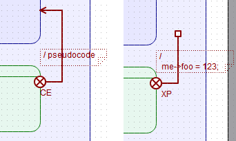
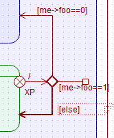
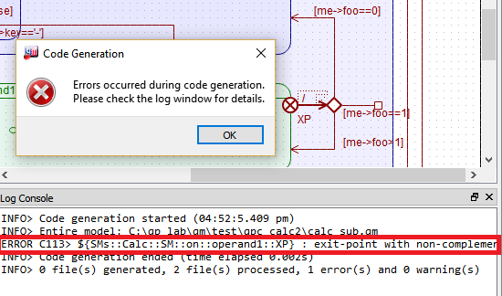

Model-Based Design Tool


eXit-Point Segment represents a way of transitioning out of a specific substate of a Submachine. The eXit-Point provides an indirection layer to exiting a specific substate without exposing this substate or any other internal parts of the Submachine.

Make sure that the State Machine subwindow is active. In the State Machine Toolbox click on the eXit-Point Segment tool and release the mouse button (don't drag the tool off the toolbar). At this point, when you hover the mouse over an eligible eXit-Point of a Submachine State, the mouse pointer changes to the eXit-Point Segment tool with the anchor (). To add the eXit-Point Segment at this source state, press the mouse button and drag the transition end out. As you drag the connector, the mouse pointer changes to a hand and the transition end takes the shape of a square ().
An eXit-Point Segment, just like a state transition, might have choice segments attached to its end. However, an important limitation for eXit-Point Segments is that the choices must be complementary, meaning that you must use the else guard to complement any other choices attached to the end of an eXit-Point Segment. For example, the screen shot below shows an eXit-Point Segment with complementary choice segments:


eXit-Point Segment item can be configured by the eXit-Point Segment Property Sheet.
The eXit-Point Segment property sheet contains the following properties:
The eXit-Point property is not editable directly, but rather it is determined geometrically by the eXit-Point at which the given eXit-Point Segment originates.
The target property is not editable directly, but rather it is determined geometrically by the end-point of the transition. For state-to-state transitions, the target property lists the target state at which the end-point () terminates. For internal transitions with the square end-point (), the target property shows internal.
An eXit-Point Segment can have optional action property, which consists of two entries: pseudocode and code (see Transition Property Sheet). Only the code part of the action property is relevant for the code generation. The pseudocode field is designed only to be displayed in the diagram to avoid clutter by minimizing the amount of text to display next to the transition shape.
Next: Code Engineering